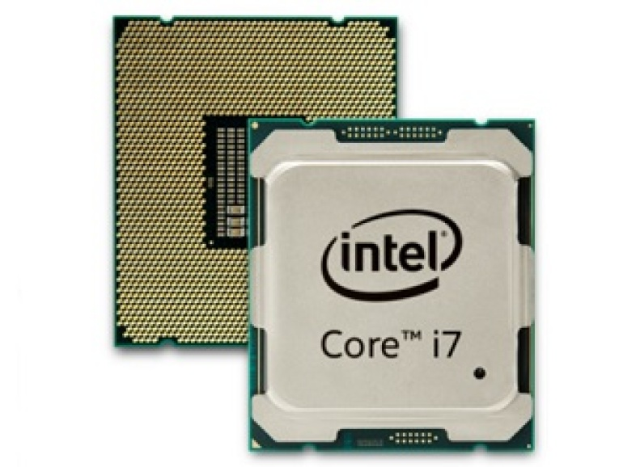

A PC case, or computer tower, protects internal components from damage, prevents dust buildup, and facilitates cooling with vents and fans. It provides space for expansion, storage, and redundancy, while offering ports for external peripherals like keyboards and mice.
The CPU (Central Processing Unit) in a PC is the main component responsible for executing instructions that make up the software running on the system. It performs most of the computation and decision-making processes that allow the computer to function.
The GPU (Graphics Processing Unit) in a PC is responsible for rendering images, animations, and videos to the display. It is specifically designed to handle complex mathematical calculations required for creating and manipulating graphics, but it also plays a role in other parallel processing tasks.
The motherboard in a PC serves as the main circuit board that connects all the components of the computer, allowing them to communicate with each other and function together as a system. It is essentially the backbone of the PC, providing pathways for data to travel between the CPU, GPU, RAM, storage devices, and other peripherals.
Memory or RAM (Random Access Memory) is a critical component in computing, used for temporarily storing and quickly accessing data that your system actively uses.
An SSD (Solid-State Drive) is a type of storage device that uses flash memory to store data. Unlike traditional HDDs (Hard Disk Drives), SSDs have no moving parts, which makes them faster, more durable, and energy-efficient.
A PSU (Power Supply Unit) is a hardware component responsible for supplying power to your computer. It converts AC (alternating current) from your wall outlet into DC (direct current), which is required by the internal components of your system.
System cooling is essential for maintaining the optimal performance and longevity of your computer. Cooling solutions dissipate the heat generated by components such as the CPU, GPU, RAM, and other hardware, preventing them from overheating, which can lead to reduced performance, system instability, or hardware failure.
Gaming peripherals are specialized devices designed to enhance the gaming experience, providing better control, precision, comfort, and immersion. This includes any type of external device that is connected outside of your PC.
An operating system (OS) is essential software that manages computer hardware and provides services to other software applications. It serves as an intermediary between the user and the computer hardware.